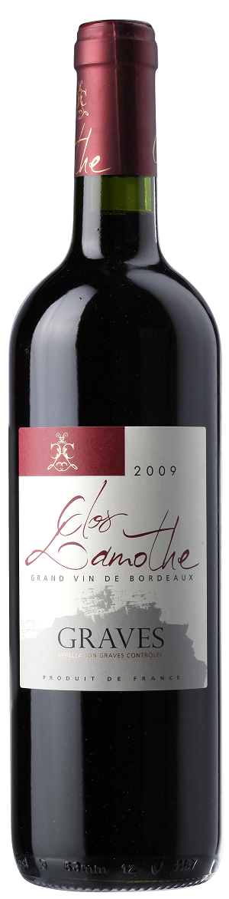

Clos Lamothe. Graves. Rouge
Вино защищенного наименования места происхождения региона Бордо сухое красное категории AOC.
Вино защищенного наименования места происхождения региона Бордо сухое красное категории AOC. Изготовлено из винограда сорта Мерло, произрастающего в субзоне Грав (Бордо, Франция). Вино красно-рубинового цвета с богатым фруктовым ароматом с доминантами черной смородины и вишни. Вкус округлый, мягкий, фруктовый с карамельными нотками. Послевкусие длительное и очень ароматное. Превосходно сочетается с блюдами из дичи и красного мяса с грибами и густыми соусами. Рекомендуется подавать при температуре 16-18°С.